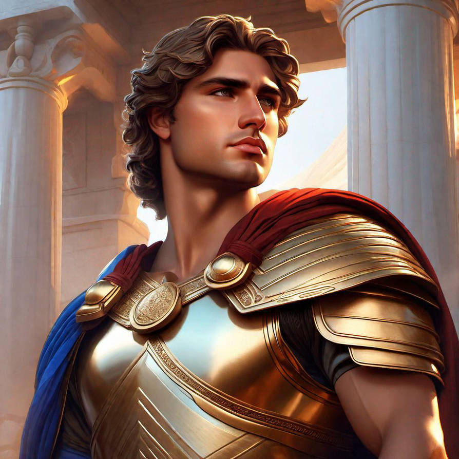

Alexander the great
Alexander the Great is widely regarded as one of the greatest military leaders in history. Born in 356 BCE in Macedonia, he became king at just 20 and quickly expanded his empire, conquering vast territories from Greece to Egypt and through Persia to India. Known for his strategic brilliance, charisma, and fearlessness, Alexander never lost a battle and is credited with spreading Greek culture across the known world, a period known as the Hellenistic Age. His leadership transformed the ancient world, and his legacy endures in the blending of cultures, the spread of knowledge, and the founding of cities that continue to bear his name.